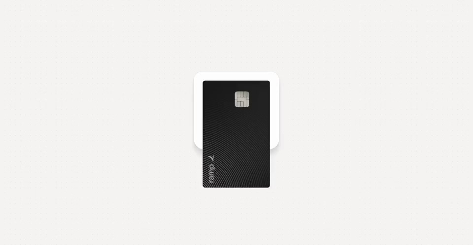
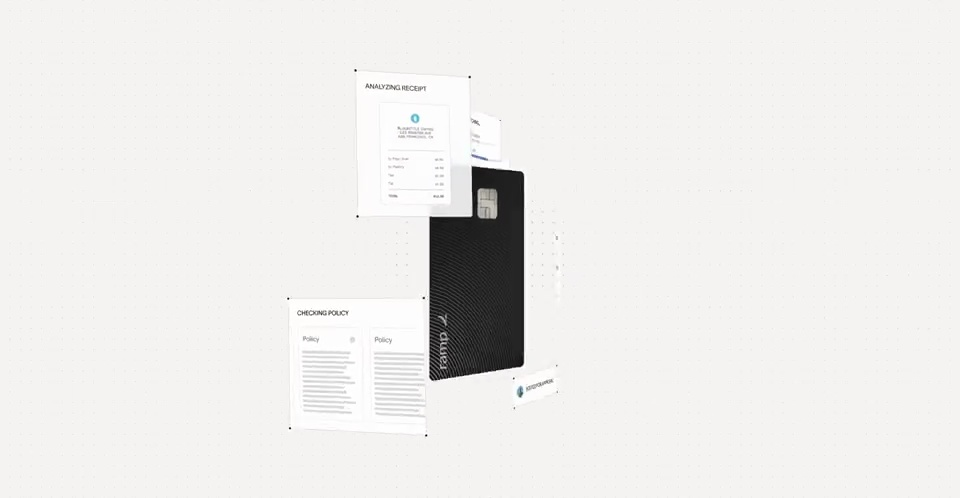
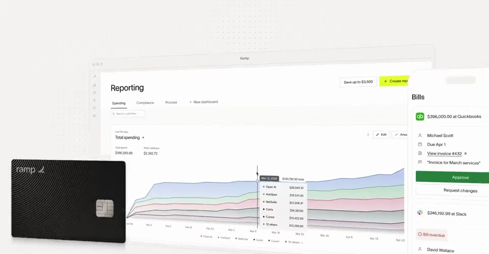
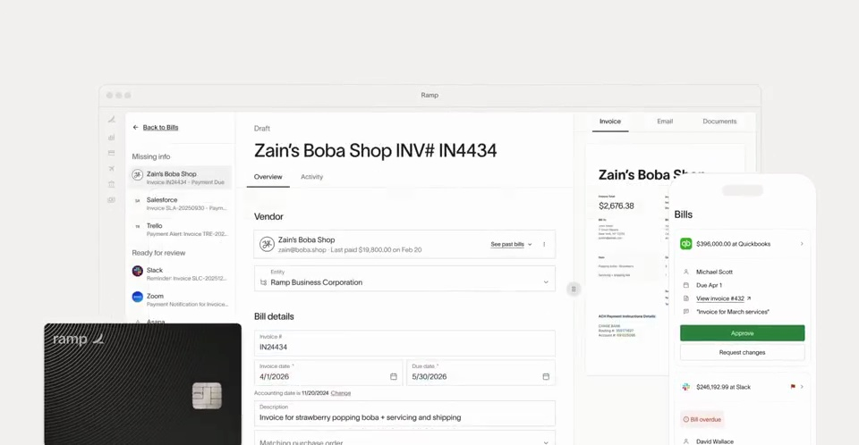
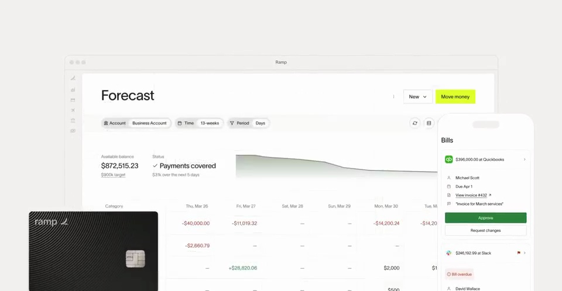

Ramp / V170
Ramp · 官网产品展示
从一张支付卡展开相关业务，再推进到账单与报表界面，让同一笔消费在不同视图里连起来。
构图与编排 可播放 · 可替换内容
整体编排规则示例
查看 HTML 源码
<!doctype html><html lang="zh-CN"><meta charset="utf-8"><meta name="viewport" content="width=device-width,initial-scale=1"><title>Ramp · 官网产品展示 · sequence</title><style>html,body{margin:0;width:100%;height:100%;overflow:hidden;background:#f6f5f3}canvas{display:block;width:100%;height:100%;object-fit:contain}</style><body data-mode="sequence"><canvas width="1000" height="600"></canvas><script src="data.js"></script><script src="common.js"></script><script src="scene.js"></script><script src="bridge.js"></script></body></html>画面元素实体卡发票上传区账单列表报表曲线交易详情
MOTION LANGUAGE
动作与构图
局部动作 · 构图规则
01
让实体卡成为空间锚点
暖白底上先放黑色卡片，周围单据从不同方向加入。卡片保留前景位置，白色界面层以轻阴影与细边界区分。
02
上传动作必须落到对应单据
上传动作必须落到对应单据规则示例
查看 HTML 源码
<!doctype html><html lang="zh-CN"><meta charset="utf-8"><meta name="viewport" content="width=device-width,initial-scale=1"><title>Ramp · 官网产品展示 · sequence</title><style>html,body{margin:0;width:100%;height:100%;overflow:hidden;background:#f6f5f3}canvas{display:block;width:100%;height:100%;object-fit:contain}</style><body data-mode="clip" data-start="3.7" data-end="7"><canvas width="1000" height="600"></canvas><script src="data.js"></script><script src="common.js"></script><script src="scene.js"></script><script src="bridge.js"></script></body></html>文件标签靠近光标，被送进上传区后转成发票详情；详情再接到账单列表。不要把上传与结果当作无关切镜。
03
最后把局部业务收进工作台
报表占大区域，账单侧栏与卡片继续留在周边。图表用低饱和多色，荧光黄只点亮主要操作。换主题时同时更新金额、列表行、报表与凭证。
SEQUENCE
段落与节奏
点击段落，定位到上方编排示意。





画面参考 · 离散静帧
KEEP THE RELATIONSHIPS
制作其他主题
- 可换费用、账单、订单等业务；保持同一记录在多视图的对应。
制作约束
实体卡 / 发票 / 上传区 / 账单列表 / 报表曲线 / 交易详情
- 暖白底上先放黑色卡片，周围单据从不同方向加入。卡片保留前景位置，白色界面层以轻阴影与细边界区分。
- 文件标签靠近光标，被送进上传区后转成发票详情；详情再接到账单列表。不要把上传与结果当作无关切镜。
- 报表占大区域，账单侧栏与卡片继续留在周边。图表用低饱和多色，荧光黄只点亮主要操作。换主题时同时更新金额、列表行、报表与凭证。